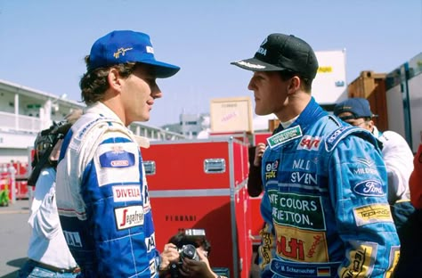

Welcome to the World of Formula 1
Where speed meets history.
What is F1?
Formula 1 (F1) is the highest level of international motorsport for single-seater race cars. It features teams like Ferrari, Mercedes, and Red Bull competing in a global championship. Races, called Grands Prix, take place on tracks and city streets across various countries. F1 cars are known for their speed, advanced technology, and aerodynamics. Drivers earn points based on race finishes, and titles are awarded to the best driver and team each season. It's not just about speed—strategy, teamwork, and precision all play a huge role in winning.
Where It All Began
Formula 1 began in 1950 with the first official World Championship race held at Silverstone, England. This historic event marked the start of what would become the pinnacle of international motorsport. Organized by the Fédération Internationale de l'Automobile (FIA), the championship brought together elite drivers and manufacturers to compete at the highest level. With its mix of speed, strategy, and innovation, the sport quickly gained popularity around the world. That first race not only crowned the first F1 winner but also laid the groundwork for a legacy of legendary rivalries, technological breakthroughs, and unforgettable moments on and off the track.
Legends of the Track
From Senna to Schumacher to Hamilton, F1 has seen some of the greatest athletes in motorsport history leave their mark on the sport. Ayrton Senna was known for his raw talent and emotional driving, especially in the rain. Michael Schumacher redefined dominance with his record-breaking titles and fierce competitiveness. Lewis Hamilton brought a new era of excellence, combining consistency, speed, and activism off the track. Each of these drivers not only shattered records but inspired millions. Their legacies go beyond trophies... they helped shape the culture, intensity, and spirit of Formula 1 for generations to come..
The Modern Era

Formula 1 in 2025 is more competitive than ever, with teams pushing the boundaries of innovation and strategy in every race. The introduction of new hybrid engines, advanced aerodynamics, and cutting-edge materials has made the sport faster, more efficient, and more unpredictable. McLaren, Ferrari, and Red Bull continue to battle for supremacy, each employing their own unique upgrades and strategies to gain an edge. Meanwhile, the rise of newer teams and technical innovations is reshaping the grid. With more teams than ever striving to challenge the leaders, the 2025 season is defined by fierce competition and constant evolution.
Evolution of F1 Cars
F1 cars have evolved dramatically from their humble beginnings as simple open-wheel machines to high-tech beasts that embody cutting-edge technology. Early cars were focused primarily on raw speed and lightweight designs, but today's machines are built for precision and efficiency. Hybrid engines combine power and sustainability, while aerodynamic wings and adjustable parts maximize downforce and minimize drag. Advanced materials like carbon fiber and innovative suspension systems further enhance performance. The result is a stunning fusion of speed, engineering, and futuristic design, where every element of the car is meticulously crafted for optimal performance on the world's toughest circuits.
2025 Race Calendar